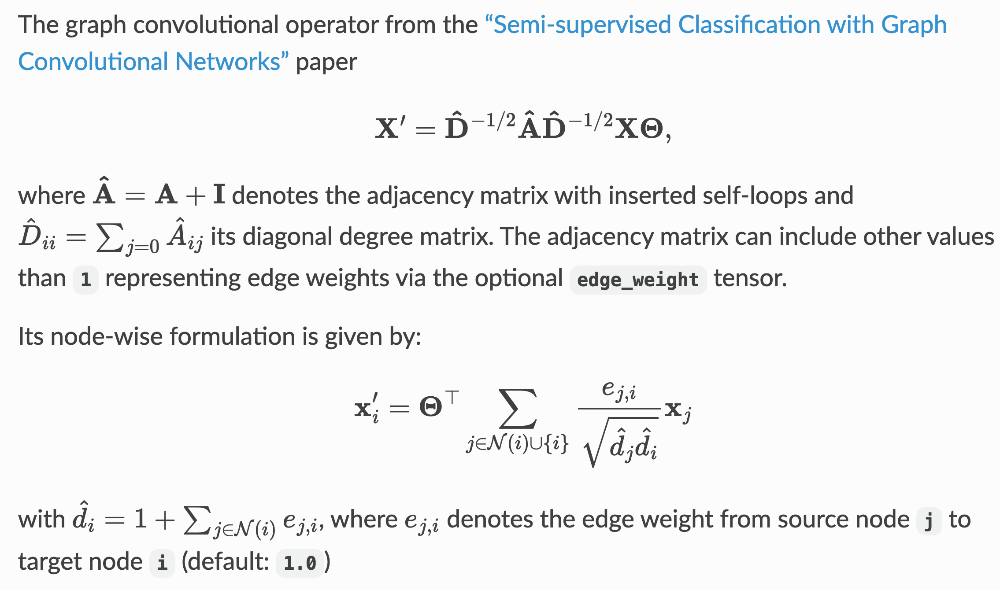

from torch_geometric.datasets import Planetoid
dataset = Planetoid(root='/tmp/Cora', name='Cora')[PyG] lesson5: Learning Methods on Graphs
Download notebook
!wget https://raw.githubusercontent.com/miruetoto/yechan3/main/posts/2_Studies/PyG/ls5.ipynbRef
data
dataset[0]Data(x=[2708, 1433], edge_index=[2, 10556], y=[2708], train_mask=[2708], val_mask=[2708], test_mask=[2708])type(dataset[0])torch_geometric.data.data.Dataimport torch_torch_geometrictorch_geometric.data.DataNameError: name 'torch_geometric' is not defineddataset[0].edge_index.shapetorch.Size([2, 10556])dataset[0].y.dtypetorch.int64dataset[0].train_masktensor([ True, True, True, ..., False, False, False])import torch
import torch.nn.functional as F
from torch_geometric.nn import GCNConv
class GCN(torch.nn.Module):
def __init__(self):
super().__init__()
self.conv1 = GCNConv(dataset.num_node_features, 16)
self.conv2 = GCNConv(16, dataset.num_classes)
def forward(self, data):
x, edge_index = data.x, data.edge_index
x = self.conv1(x, edge_index)
x = F.relu(x)
x = F.dropout(x, training=self.training)
x = self.conv2(x, edge_index)
return F.log_softmax(x, dim=1)device = torch.device('cuda' if torch.cuda.is_available() else 'cpu')
model = GCN().to(device)
data = dataset[0].to(device)
optimizer = torch.optim.Adam(model.parameters(), lr=0.01, weight_decay=5e-4)
model.train()
for epoch in range(200):
optimizer.zero_grad()
out = model(data)
loss = F.nll_loss(out[data.train_mask], data.y[data.train_mask]) # train에 대한 loss만 따로 처리해야함
loss.backward()
optimizer.step()out.shape # 카테고리가 7개torch.Size([2708, 7])data.y.unique() # 카테고리가 7개tensor([0, 1, 2, 3, 4, 5, 6], device='cuda:0')model.eval()
pred = model(data).argmax(dim=1)
correct = (pred[data.test_mask] == data.y[data.test_mask]).sum() # 애큐러시는 test
acc = int(correct) / int(data.test_mask.sum())
print(f'Accuracy: {acc:.4f}')Accuracy: 0.8050FRAUD data에 활용?
- 고객정보별로 그래프생성
- 커다란 하나의 그래프 생성
model 분석
modelGCN(
(conv1): GCNConv(1433, 16)
(conv2): GCNConv(16, 7)
)dataset.dataData(x=[2708, 1433], edge_index=[2, 10556], y=[2708], train_mask=[2708], val_mask=[2708], test_mask=[2708])- 2708개의 노드가 있음 \(\to\) 이걸 observation으로 해석해야함.
- 각 노드에는 1433개의 특징(X)과 0-6까지의 label(y)이 연결되어 있음.
- 2708개의 노드는 각각 tr,val,test로 나누어짐
b,W = list(model.conv1.parameters())W,W.shape # 1433개의 특징을 16개로 줄임(Parameter containing:
tensor([[ 0.0086, -0.0062, -0.1213, ..., 0.1313, -0.0251, 0.0856],
[-0.0033, -0.0384, -0.1193, ..., 0.0362, -0.1130, 0.0426],
[ 0.0118, 0.0722, 0.0481, ..., -0.0677, 0.0497, 0.0095],
...,
[ 0.0158, 0.1560, -0.0517, ..., -0.0317, 0.1272, 0.0131],
[-0.0259, 0.0146, -0.0539, ..., 0.0069, -0.0665, 0.0016],
[ 0.0191, -0.1023, 0.0411, ..., -0.0415, 0.0125, 0.0015]],
device='cuda:0', requires_grad=True),
torch.Size([16, 1433]))b,b.shape(Parameter containing:
tensor([0.2343, 0.2136, 0.1581, 0.1914, 0.3095, 0.0851, 0.3675, 0.2414, 0.3099,
0.2571, 0.1340, 0.2693, 0.1588, 0.2984, 0.1877, 0.2014],
device='cuda:0', requires_grad=True),
torch.Size([16]))GCNConv?? Kipf and Welling (2016)
Kipf, Thomas N, and Max Welling. 2016. “Semi-Supervised Classification with Graph Convolutional Networks.” arXiv Preprint arXiv:1609.02907.
- ref: https://pytorch-geometric.readthedocs.io/en/latest/generated/torch_geometric.nn.conv.GCNConv.html
아래의 논문에서 제안되었음.. (레퍼수가..)
https://arxiv.org/abs/1609.02907
대략적인 설명을 캡쳐하면 아래와 같음

여기에서
- \({\bf A}\)는 연결정보를 의미
- \(\hat{\bf A}\)는 연결정보에 자기자신의 노드를 추가
- \({\bf D}\)는 \({\bf A}\)를 표준화하기 위한 매트릭스
- 결국 \(\hat{\bf D}^{-1/2}\hat{\bf A}\hat{\bf D}^{-1/2}\) 는 통째로 연결정보에 대한 matrix
- \(\hat{\bf D}^{-1/2}\hat{\bf A}\hat{\bf D}^{-1/2}{\bf X}\) 는 통째로 \({\bf X}\)를 평행이동한것을 의미 (혹은 그 비슷한 것을 의미)
- \({\bf \Theta}\)는 weight를 곱하는 과정임